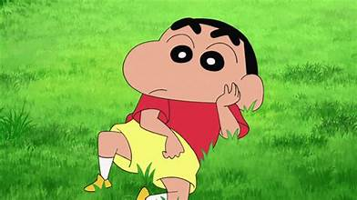

CARTOONS

An animated television adaptation began airing on TV Asahi in 1992 and is still ongoing, with over 1000 episodes. The show has been dubbed in 30 languages which aired in 45 countries.[7] As of 2023, both the Crayon Shin-Chan and New Crayon Shin-Chan series has over 148 million copies in circulation, making it among the best-selling manga series in history.
TO get details go here